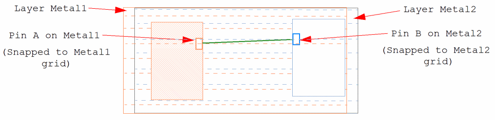
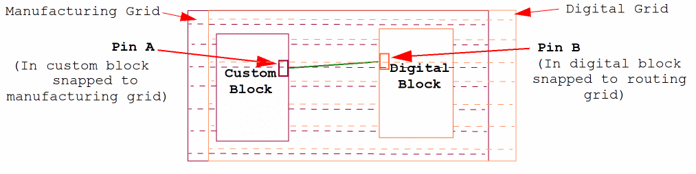
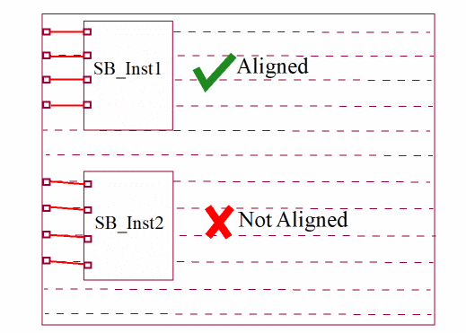
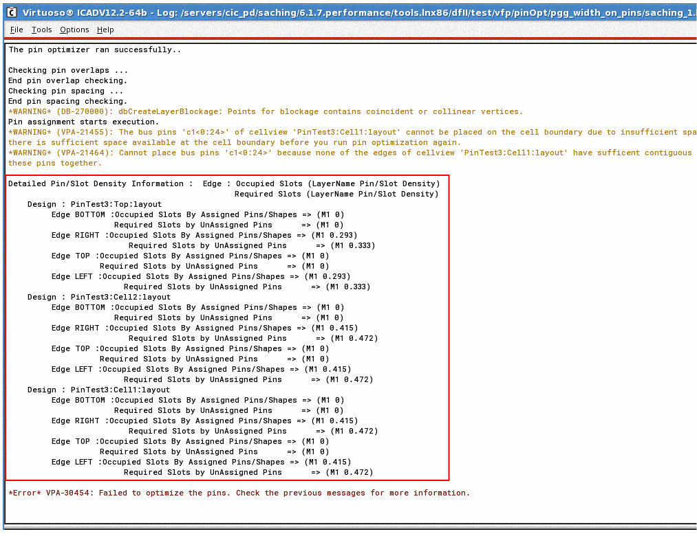

Alignment Issues During Pin Optimization
There are certain possible scenarios where running Pin Optimizer may lead to certain alignment issues among the connecting pins.
-
When the connected pins are located on different layers: Each layer may have different pin grids on which the pins are placed. This may result in alignment issues.
In the following example, Pin A is on metal1 and Pin B is on metal2. Metal1 and metal2 have different pin grids. Pins A and B are placed and snapped to their corresponding layer grids. This has resulted in misalignment between the two pins.
 - When there are multi-pin nets: Optimizing all pins in these nets may cause alignment issues.
-
When the connected pins belong to different types of blocks: Pins in custom blocks are snapped to the manufacturing grid, those in digital blocks are snapped to the digital or routing grid, and the ones assigned to block type
nilare snapped to the user-defined grid. Therefore, there may be misalignments when such pins are connected. The following example depicts misalignment between connected pins that are located in different types of blocks—custom block and digital block.
 -
When there are multiple instances of a block: Pins in one instance will be aligned correctly. However, there may be alignment issues with the other instances. In the following example, there are two instances of a soft block. Pins in these instances are connected to top-level pins. On running Pin Optimizer, pins in one of the instances are aligned correctly, whereas there is a misalignment with the other instance.

Viewing the Slot Density Report
In case the Pin Optimizer fails, use the detailed slot density report to view information about occupied and unoccupied slots for each soft block in the design. To view the slot density report, you need to set the PIN_OPT_PIN_DENSITY_INFO shell environment to any positive integer number, for example:
setShellEnvVar("PIN_OPT_PIN_DENSITY_INFO" "1")

Related Topics
Return to top